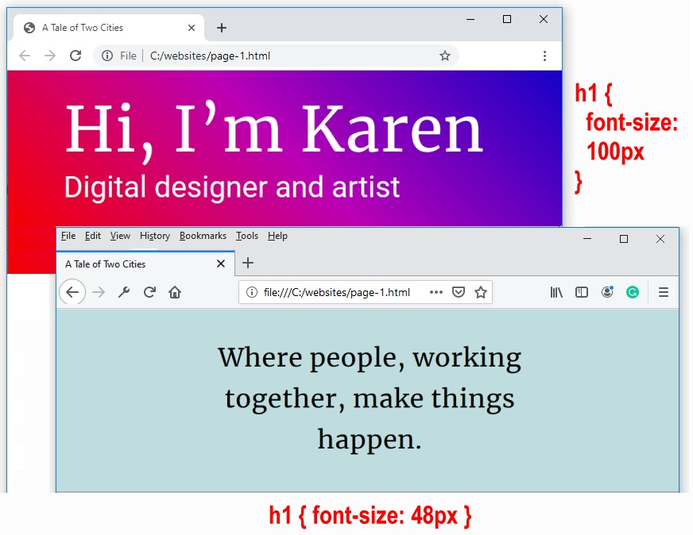

Learning Goals
At the end of this Tutorial, you will be able to:
- Recognise the most commonly used CSS text properties in web design. in web design. These are:
font-family
font-size
font-weight
font-style
text-align
letter-spacing
Styling with font-family
The two basic values of the font-family property in CSS are serif and sans-serif.
- Serifs are the small lines or ‘squiggles’ at the ends of letter, numbers and other characters.
- Sans-serif fonts do not have these serifs (‘Sans’ is French for ‘without’.)

By default, web browsers all text in a serif font.
/* These two style rules make no difference.
Both h2 and h3 sub-headings are already serif by default. */
h2 ( font-family: serif }
h3 ( font-family: serif }
/* This style rule does make a difference. */
p ( font-family: sans-serif }
For printed documents, such as books, newspapers, magazines and so on...
- Serif fonts are generally used for long paragraphs of text. This is because the serifs help the human eye to recognise whole words rather than sequences of individual letters.
- For headings and short blocks of text, either serif or sans-serif fonts are equally appropriate choices.
In web pages, however, there is no evidence that paragraphs of text are more readable in serif fonts. So you will see fonts of either the serif or sans-serif family used for various elements of web pages.
Styling with font-size
As its name suggests, the font-size property sets the size of text in headings and paragraphs.
In web design, font sizes can be measured in different units. The simplest of these is px, which is short for pixels.
Here are the default values of font-size for headings and paragraphs used by most web browsers.
/* Default values for font-sizes in most web browsers. */
h1 ( font-size: 32px }
h2 ( font-size: 24px }
h3 ( font-size: 18px }
p ( font-size: 16px }
Particularly for <h1> and <h2> headings, the font-size values you choose will depend on the number of characters in the heading. See the examples below.
In modern web design, font size is typically set using a responsive scale that changes according to the width of the viewport.
Styling with font-weight
The two basic values of font-weight are normal and bold. By default, web browsers display paragraphs in normal weight and all headings and sub-headings in bold.
/* This does make a difference. Headings are bold by default. */
h2 ( font-weight: normal }
/* This makes no difference. Paragraphs are normal by default. */
p ( font-weight: normal }
As you learnt in the previous Working with HTML Tutorial, you can make one or a few words in an element bold with the <b> ... </b> tag pair in HTML.

To make entire heading or text paragraph bold, however, use the font-weight: bold property and value pair in CSS.
Styling with font-style
The two basic values of font-style are normal and italic. By default, web browsers display both all headings, sub-headings and text paragraphs in the normal font-style.
/* These make no difference. Both are already normal by default. */
h2 ( font-style: normal }
p ( font-style: normal }
As you learnt in the previous Working with HTML Tutorial, you can make one or a few words in an element italic with the <i> ... </i> tag pair in HTML.

To make entire heading or text paragraph bold, however, use the font-style: italic property and value pair in CSS. The two examples below are from Lou Levits.

Styling with text-align
In Microsoft Word or other word processors, you are typically offered four choices for aligning both headings and text paragraphs: Left, Centered, Right and Justified.

In CSS, the equivalent alignment values are:
text-align: left; /* Default value */
text-align: center;
text-align: right;
text-align: justify; /* Not recommended */
Below are examples of the left, center and right values of the text-align property in CSS.

The justify value of text-align is not recommended because web browsers do not distribute spacing between characters and words proportionally.
Styling with letter-spacing
The letter-spacing property sets the spacing between text characters within a heading, sub-heading or paragraph. Like the font-size property, you can set letter-spacing in px units.
- To reduce the letter-spacing, use a negative value. For example:
h1 ( /* This REDUCES the letter-spacing. */ letter-spacing: -2px }
- To increase the letter-spacing, use a positive value. For example:
h2 ( /* This INCREASES the letter-spacing. */ letter-spacing: 6px }
In web pages, reduced or increased letter-spacing is often used in headings for visual effect. In text paragraphs, however, web designers typically use default letter spacing.
You will commonly see letter spacing effects applied in brand logos to achieve a distinctive appearance. See the examples below.